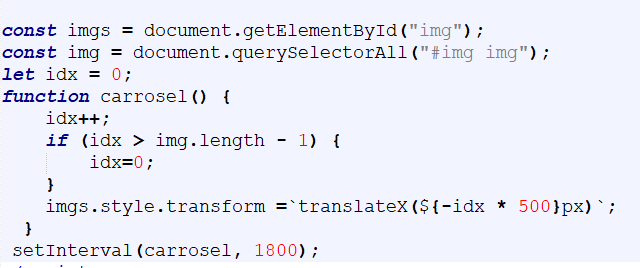

1. O Javascript é usado para dar mais interatividade a página, como resposta a um evento, tipo um clique do
mouse ou tempo pecorrido;
2. O Javascript, assim como CSS pode ser incorporado ou vinculado
3. Quando Incorporado é colocado no HTML entre as tags script /script "
4. Como exemplo, vamos usar o Javascript para criar um carrosel de imagens
4.1. Inclua mais algumas fotos em no HTML, emabaixo da imagem já existente. Estas imagens ficaram abaixo ou
ao lado uma das outras.
4.2. No Notepad++ crie um novo arquivo com o nome carrosel.js
4.3. Neste arquivo escreva a função abaixo:
5. A seguir o códico HTML com CSS para colocar uma divisão ao lado da outra
